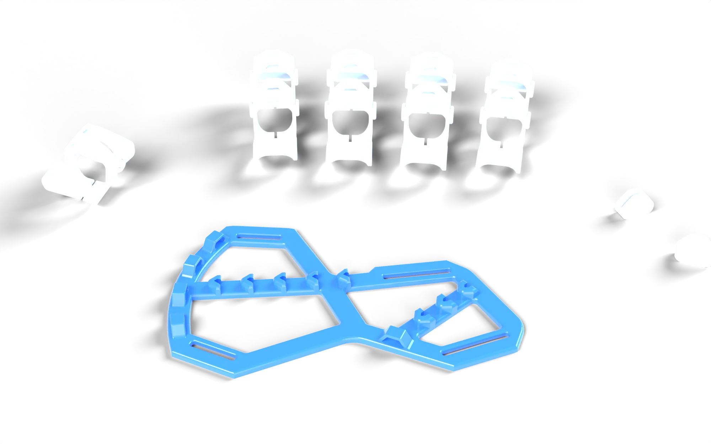
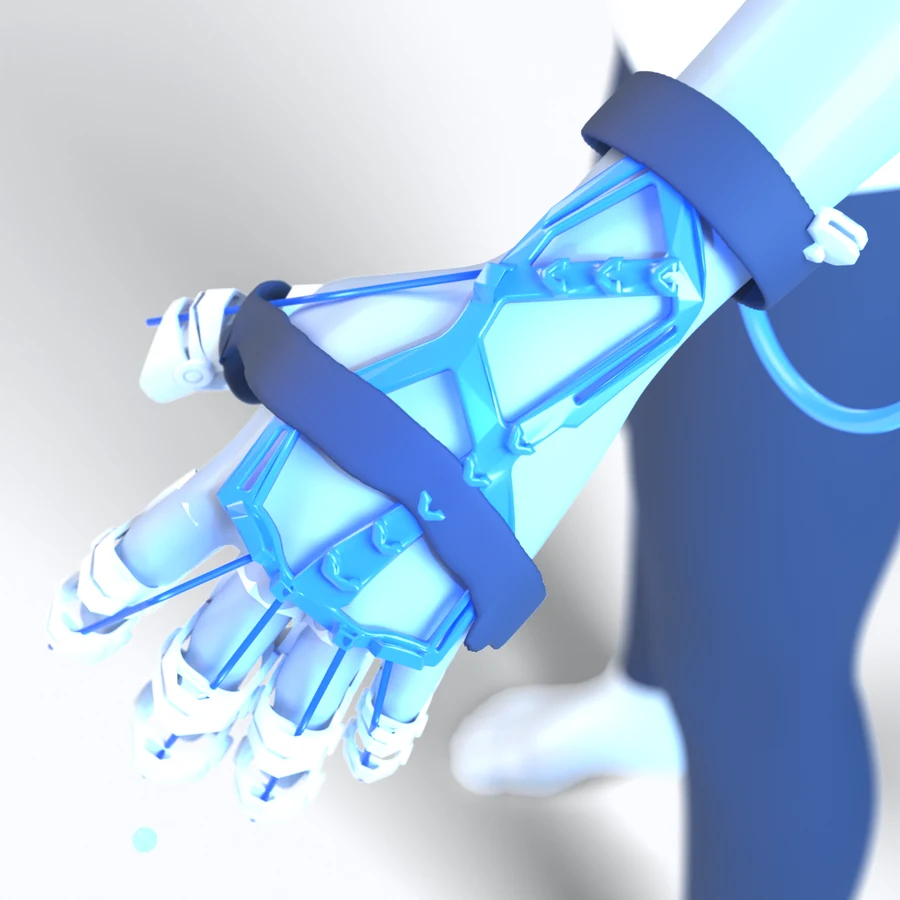

AI · IoT · Stroke rehabilitation
Exolution is a 3D-printed smart hand exoskeleton for stroke survivors with one-sided weakness. It helps the fingers open, adapts its help to each patient, and streams every repetition live to the care team.
The device · rendered in Blender
Every part is 3D-printed. The dorsal plate is printed flat, then warmed and moulded to the patient's own hand.

Film · made with Blender
The real printed parts, assembled on a mannequin hand. The rings bend with every finger joint while the cords assist opening.
After stroke, flexor muscles often overpower extensors. Opening the hand is the hardest part of recovery.
Re-learning movement needs intensive practice, far more than a weekly clinic session can offer.
Existing rehabilitation robots are large and expensive. Most patients go home without one.
A low-cost printed orthosis made smart with sensors, edge AI and IoT, and built to be repaired, not replaced.

The Exolution web app shows a live digital twin, the AI's assistance level, muscle signal, heart rate and weekly progress for patients, families and therapists.
Stroke survivors with weakness on one side of the body (hemiparesis) who are practising hand opening and grasping, under the guidance of a therapist. Patient criteria are still being refined in our research.
It prints flat, which is fast and needs no supports. Warmed above PETG's glass temperature, it becomes flexible and is moulded directly onto the patient's hand, giving a personal fit at very low cost.
It estimates how much of each finger movement the patient can do alone, from finger angle and muscle signals, and sets the assist level so help fades as strength returns.
The web app runs on simulated data unless a device or the online simulator is streaming. Live data travels through Firebase Realtime Database.
No. Exolution is a student research prototype and concept. It is not certified for clinical use.
Try the live demo app, or stream data from the virtual device in your browser.